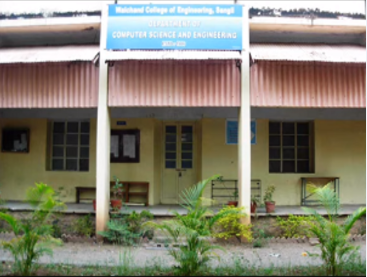

The department was established in the year 1986 with the introduction of undergraduate programme in Computer Science and Engineering with intake of 60 students.
Initially the department was started as a joint department with Electronics Engineering.
It was founded and headed by Prof. N.R. Phadnis.
Later on in 1994 the department got a separate existence under the leadership of Prof. A. R. Yardi.
In 1997 Dr. P.J. Kulkarni took over the department and since then the department has made significant progress.
The programme focuses on areas such as Theoretical Computer Science, Computer Communication, Database Engineering, Software Engineering, Operating Systems and Computer Hardware.
Syllabus of these courses is up-to-date and is inline with the current trends of the Computer and IT Industry.
Additional guidance is offered to students in specific areas in the field of Computer Science and Engineering to enable the outgoing graduates to give more justice to the job assigned to them.